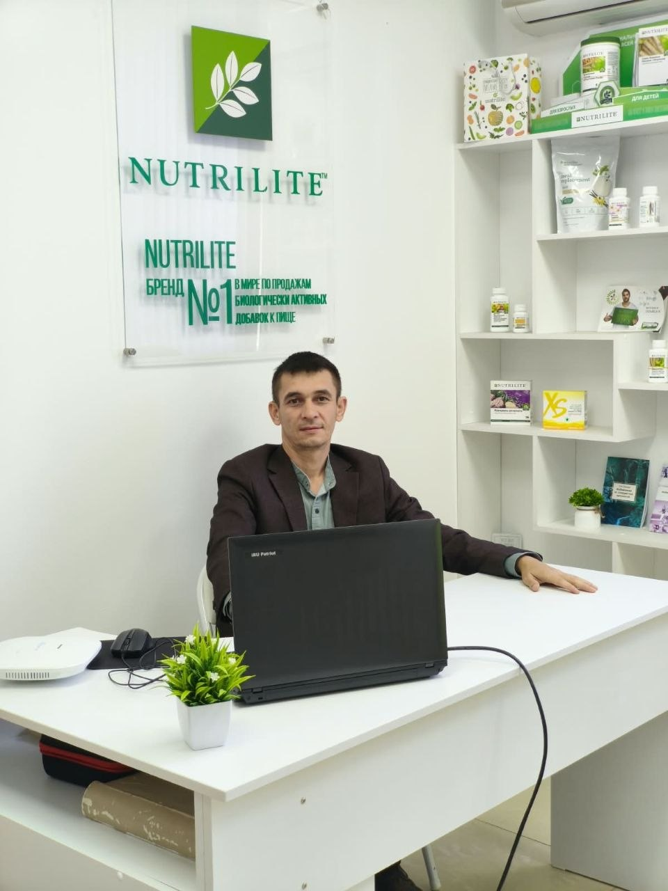

Васильев Александр Викторович
Сертифицированный нутрициолог. Помогает разобраться с питанием, образом жизни и индивидуальной поддержкой организма.
- 2021: РУДН, кафедра диетологии и клинической нутрициологии;
- 2022: фундаментальные основы нутрициологии;
- консультации по питанию и нутрицевтической поддержке.